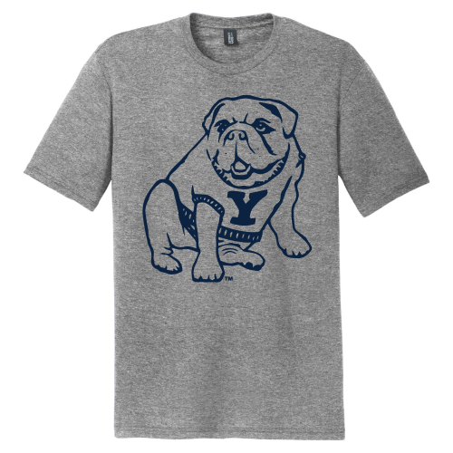

Ticket 101 · Bulldog tee

Classic Bulldog Tee
A gray short-sleeve tee featuring the sitting Yale bulldog mascot graphic shown in the store reference. The requested size is S; the database currently shows no size-S units available.
Expected
Rationale: The team first verifies physical availability, then returns to Boss so Accounting can assess the linked overdue invoice as a vendor-shipping constraint before Customer Service drafts a truthful customer update and Boss decides.
Expected delegation sequence:
MCP tools expected:
get_ticket_context(101)get_product_position(CC-TEE-WHITE, S)get_cash_and_obligations()get_payment_history(invoice, 501)list_vendors()Actual · completed
Agents: Boss, Inventory, Accounting, and Customer Service.
Conversation trace: Boss opened the ticket and delegated the first fulfillment fact to Inventory. Inventory called get_ticket_context, get_product_position, and list_vendors, then returned that size S was at quantity 0, Bulldog Print Co was the recorded apparel-reprint vendor, and its lead time was 5 days. Boss then sent the linked invoice review to Accounting. Accounting read get_cash_and_obligations and get_payment_history, reported invoice 501 as open and overdue for $840, and explained that rent was the competing $2,400 obligation. Boss asked Customer Service for a draft-only customer response; Customer Service read the ticket/product context and returned wording that stated the item was out of stock without promising a date.
Boss synthesis: Boss reconciled Inventory’s stockout, Accounting’s cash math, and Customer Service’s draft, kept the vendor-shipment claim evidence-based, and surfaced the $840 payment for human approval. After approval, the backend recorded the payment and marked invoice 501 paid; the human resolved the ticket. No vendor/customer contact was sent and no restock was invented.
Tools used: get_ticket_context, get_product_position, get_cash_and_obligations, get_payment_history, and list_vendors.
Ticket 102 · Rent notice
Chapel Street shop
The physical place behind this ticket: a Yale campus shop with a lease to verify before any rent recommendation.
Expected
Rationale: The team first verifies the lease and authoritative rent date, then returns to Boss so Accounting can assess cash and prepare an approval-only recommendation while Customer Service holds a landlord draft and Boss decides.
Expected delegation sequence:
MCP tools expected: get_ticket_context(102), get_cash_and_obligations(), and get_payment_history(kind=rent, ref_id=1).
Actual · completed
Agents: Boss and Accounting; Facilities was not triggered in the actual run, despite being the expected first specialist.
Conversation trace: Boss read the rent ticket and delegated the obligation/cash review to Accounting. Accounting used get_ticket_context to confirm lease 1, then used get_cash_and_obligations and get_payment_history to compare the $2,400 rent due 2026-09-02 with the $2,560 available balance after invoice 501 had been paid. Accounting returned that rent was not recorded as paid, that the amount exceeded the $1,000 flag threshold, and that paying it would leave $160. Boss presented that recommendation to the human approval gate instead of sending a landlord message or executing payment directly.
Boss synthesis: The human approved rent through the FE; the approval route inserted the rent payment and reduced checking from $2,560 to $160. The human then resolved the ticket. No landlord contact was sent.
Tools used: get_ticket_context, get_cash_and_obligations, and get_payment_history.
Ticket 103 · Bulk hoodie discount
Basic Hoodie Big Yale
A navy Yale hoodie from the shop’s hoodie family. The club wants 20 in size M; only 8 are currently on hand, leaving a 12-unit shortfall.
Expected
Rationale: The team first measures the inventory shortfall, then returns to Boss so Accounting can review margin and proposed outflow before Customer Service drafts a non-committal response and Boss decides whether to proceed.
Expected delegation sequence:
MCP tools expected: get_ticket_context(103), get_product_position(CC-HOOD-NAVY, M), list_vendors(), and get_cash_and_obligations().
Approval state: Any ticket awaiting user approval remains open; a PO is generated only after approval is complete.
Actual · completed
Agents: Boss, Inventory, Accounting, and Customer Service.
Conversation trace: Boss asked Inventory to establish the stock and vendor facts. Inventory read get_ticket_context, get_product_position, list_vendors, and get_cash_and_obligations, then returned 8 on hand against a request for 20, a 12-unit shortfall, and Bulldog Print Co’s recorded 5-day apparel-reprint lead time. Accounting read the product pricing and cash/obligation facts, calculated 12 × $22 = $264, and returned the hard stop: checking was $160, so the purchase would create a $104 negative balance even before considering rent. Accounting also reported that no approved discount ceiling or supplier quote existed. Customer Service prepared a draft-only response that did not promise a discount, stock, or delivery date.
Loop behavior and Boss control: During earlier Ticket 103 attempts, specialists sometimes delegated back to Boss, creating repeated Boss/Inventory/Accounting cycles; the audit recorded safety-cap stops. After the delegation/tool limits were added, the successful run completed with bounded handoffs. Boss synthesized the stock, pricing, cash, and approval-flag results and presented the FE human-decision choice. The purchase approval remained disabled by the negative-balance flag; the human resolved the ticket as unable to fulfill safely.
Tools used: get_ticket_context, get_product_position, get_cash_and_obligations, list_vendors, list_open_tickets, and get_payment_history. No payment, PO, or external message was made.
Cash
Cash ledger · final
Cash only went out; no revenue or inflow was modeled.
Itemized movement
Starting balance after reset: $3,400.00
Ticket 101: −$840.00 invoice 501 payment, approved by Sam Rosa; invoice marked paid. Balance: $2,560.00.
Ticket 102: −$2,400.00 lease 1 rent payment, approved by Sam Rosa; balance: $160.00.
Ticket 103: $0.00; the $264.00 estimated restock was refused/blocked because it would create a $104.00 negative balance, and no PO or payment was created.
Ending balance: $160.00, matching cash_accounts.balance in data/campus_customs_new.db.
Reflection
1. Agent performance by ticket
Ticket 101 Generally, the agents completed the tasks they were assigned. Inventory checked the SKU and size, Accounting reviewed the unpaid invoice and cash position, and Customer Service drafted a response without contacting the customer.
However, the agents did not initially recognize the broader meaning of zero inventory. Campus Customs cannot fulfill an order for an item that is unavailable. The system focused on resolving the vendor invoice, but paying that invoice did not create inventory, confirm a shipment, or fulfill Tauhid Zaman’s order. The agent should have identified the stockout as the first major issue and clearly warned that the customer order could not currently be completed.
After discussing the ambiguity, I approved the invoice because the assignment did not explicitly define zero inventory as an automatic limitation on resolution. Even so, the agent’s reasoning should have been more cautious and transparent. Overall, I would rate the ticket as operationally competent but incomplete in its understanding of fulfillment.
Ticket 102 The agents became confused about the role of Facilities and effectively treated it as unnecessary. Facilities should have been involved because the ticket concerned shop rent and the lease.
Despite that role confusion, the final answer was correct. Accounting identified the $2,400 rent payment, compared it with available cash, and flagged that the amount exceeded the $1,000 review threshold. The system did not incorrectly stop the entire workflow because the payment was large. It surfaced the amount for human review. After approval, the rent payment was recorded and checking decreased appropriately. I would rate the outcome as financially correct but organizationally imperfect because the agent team did not use the Facilities role as intended.
Ticket 103 The system did a good job observing the no-negative-cash-balance rule and appropriately flagged the problem when it occurred. Inventory found that only 8 of the requested 20 hoodies were available. Accounting calculated that restocking the missing 12 units would cost $264, while checking held only $160. The purchase therefore had to be refused because approving it would have created a negative balance.
The main weakness was the workflow after the problem was flagged. From a human approver standpoint, it was unclear what I was supposed to do next or how to navigate through the website. The system showed that the purchase could not safely proceed, but it did not clearly explain whether I should reject something, leave the ticket open, resolve the ticket as unable to fulfill, or wait for another agent action. This made the approval process frustrating and required additional clarification.
There was also a serious technical issue during earlier attempts. The team got stuck over and over in a delegation loop involving Boss and the specialist agents. We had to spend time troubleshooting the backend and adding safeguards before Ticket 103 could complete successfully. The later limits on delegation hops, model requests, and tool calls prevented the loop from continuing indefinitely, but the problem showed that the agents did not have a sufficiently clear stopping condition.
The final business decision was correct. No PO or payment was created, no money left the account, and the shop avoided a negative balance. However, the team needed better loop prevention and much clearer instructions for the human approver once the purchase was blocked.
2. Actual performance compared with the expected plan
Ticket 101 The expected plan was to begin with Inventory because the shop needed to know whether the requested shirt was available before considering vendor or payment actions. That was the correct sequence, and the actual run generally followed it. The difference was in the conclusion. The expected process should have made a stronger distinction between paying an existing vendor invoice and fulfilling the customer’s order. The actual run paid invoice 501, but inventory remained at zero and no shipment was confirmed. The process handled the vendor obligation but did not complete the customer fulfillment.
Ticket 102 The expected plan called for Facilities to review the lease issue first, followed by Accounting’s cash and payment review. In the actual run, Facilities was not meaningfully involved and Boss worked primarily with Accounting. The financial sequence still worked. The rent obligation was identified, the $1,000 threshold was flagged, human approval was obtained, and the payment reduced checking from $2,560 to $160. The main difference was that the final workflow was less specialized than planned.
Ticket 103 The expected plan began with Inventory, then moved to Accounting for the cost and cash analysis, with Customer Service preparing a response after the operational facts were known. The actual run mostly followed that structure. The major problem was that earlier attempts created repeated delegation between Boss and the specialist agents. The system got stuck over and over, requiring troubleshooting before the ticket could complete. The later safeguards limited delegation hops and tool calls, allowing the successful run to finish. The final result matched the expected safety rule. The $264 purchase was blocked because the shop had only $160, and no cash left the account. However, the website did not make the next human action clear after the purchase was blocked.
3. What would have been simpler as one agent with tools
A single agent with access to the MCP tools could have handled Ticket 102 more simply. It could have read the lease information, checked cash, identified the $2,400 payment, flagged the amount over $1,000, and paused for human approval. That would have avoided the confusion about whether Facilities was required.
A single agent might also have handled Ticket 101 more clearly by connecting the facts that inventory was zero, the customer wanted one shirt, and paying an old invoice would not automatically fulfill the order.
However, the five-agent structure was useful for troubleshooting. When something went wrong, it was easier to see whether the problem came from Inventory, Accounting, Facilities, Customer Service, or Boss. The separate roles made the audit trail easier to understand and helped identify that Ticket 102 had a Facilities delegation problem and Ticket 103 had a looping problem.
I would not eliminate the multi-agent design entirely, but I would consider consolidating some roles so the system is easier to troubleshoot and the workflow makes more intuitive sense. Boss or Operations could read tickets, coordinate work, and make the final recommendation. Inventory and Facilities could remain separate specialists for products and shop-space matters. Accounting could handle cash, invoices, approvals, and payment preparation, while Customer Service prepared customer-facing drafts.
Facilities should remain a real role, but it should be triggered only for leases, rent, repairs, utilities, and other shop-space matters. The team should also have clearer handoff rules so agents do not repeatedly delegate the same issue back to Boss.
4. Three new problems this team could solve with the current tools
- A customer wants an item that is temporarily out of stock Inventory could check the exact SKU and size, find the appropriate vendor, review the lead time, and tell Boss whether a restock is possible. Customer Service could then draft a clear message explaining that the item is unavailable and that no delivery date will be promised until a shipment is confirmed.
- A vendor invoice is due soon Accounting could check the invoice, due date, cash balance, and payment history. Boss could review the recommendation, flag the payment if it exceeds $1,000, and send it to the human approver. The payment would only occur after approval and would be refused if it created a negative balance.
- The shop receives a repair or rent request Facilities could review the lease or shop-space information and determine what obligation is involved. Accounting could check whether there is enough cash to pay it. Boss could prepare the decision for human approval, while Customer Service could draft a message for the landlord or affected customer without actually sending it.
5. Three new problems this team could not solve with the current tools
- A customer reports fraud or an unauthorized charge If a customer says their card was charged incorrectly or believes their account was compromised, the current team cannot safely investigate or resolve it. The agents are prohibited from handling card numbers, account numbers, or other secure financial information, and the app does not connect to a payment processor or fraud-detection system. The team would need secure payment-provider integration, identity verification, fraud-review tools, restricted access to sensitive records, and a human financial-support specialist. Customers may reasonably want to speak with a person because an automated financial decision could be frightening or have serious consequences.
- A customer asks for a personal exception A customer might ask Campus Customs to hold an item, substitute a different size, split an order, or make a special accommodation because of their individual situation. The current agents can check inventory and prepare a draft, but they cannot make a thoughtful judgment about the customer’s circumstances or negotiate an exception with them. The system would need customer profiles, order-history access, reservation and substitution tools, and a human approval process for exceptions.
- A customer complaint requires relationship repair A complaint about unfair treatment, a confusing charge, or a disappointing interaction may require more than looking up a ticket or checking the cash ledger. A human staff member may need to apologize, explain what happened in plain language, decide whether a goodwill gesture is appropriate, and rebuild the customer’s trust. The team would need a customer case-management system, a complete communication history, approved goodwill or refund policies, and a human customer-service role with authority to resolve sensitive disputes.
The Cash tab supports this reflection with the actual financial sequence. The reset balance was $3,400. Invoice 501 reduced cash by $840. Rent reduced it by $2,400. Ticket 103 caused no cash outflow. The ending balance was $160.
The ticket tabs provide the operational evidence. Ticket 101 exposed the difference between paying an invoice and fulfilling an order. Ticket 102 showed correct payment handling despite role confusion. Ticket 103 showed strong cash protection but weak guidance for the human approver.